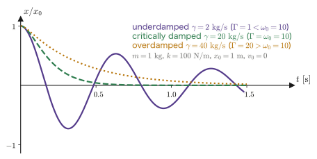
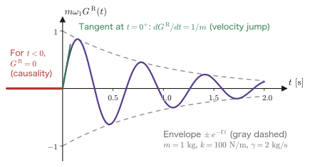
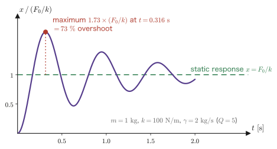

Chapter 2Solving the Damped Oscillator with Green's Functions
This chapter deals with just a single equation.
$$ m\ddot{x} + \gamma\dot{x} + kx = f(t) $$We swing a weight attached to a spring in a viscous liquid. That is all there is to it. It can be solved with high-school physics and first-year university differential equations. In fact, in Section 2.1 we put $x=\ee^{\lambda t}$ and solve it in 15 minutes.
But after that, this chapter goes out of its way to solve the same equation once more, by the roundabout method of Green's functions. Why do such a thing? There is only one reason. The Green's function toolkit can be used later, down to the letter, exactly as it is, when we derive the Kubo formula in Chapter 7. The retarded response function $\chi^R_{AB}(t-t')$ of a quantum system looks frightening, full of operators and commutators, but what it does is exactly the same as $G^R(t-t')$ in this chapter.
And there is one more, hidden theme of this chapter: the single point that a Green's function is the inverse matrix of a differential operator. Solving a system of linear equations $A\bm{x}=\bm{b}$ as $\bm{x}=A^{-1}\bm{b}$ and solving a differential equation $\hat{L}x=f$ as $x=\hat{L}^{-1}f$ are exactly the same operation. The “integral kernel” that appears when $\hat{L}^{-1}$ is written in integral form is none other than $G$. Once this correspondence sinks in, Green's functions stop being frightening. In Section 2.2 we build this correspondence table carefully.
- The naive solution of the damped oscillator—the characteristic equation, the three cases of weak damping, critical damping, and overdamping, and the complete solution with the initial conditions imposed
- The correspondence Green's function = inverse matrix of a differential operator, and a one-to-one dictionary with systems of linear equations
- The definition of the Green's function, $\hat{L}G(t-t')=\delta(t-t')$, and the reason why $G$ is a function of $t-t'$ only (time-translation invariance)
- The retarded Green's function $G^R$—how causality, $G^R(t)=0\ (t<0)$, determines the solution uniquely
- Finding $G^R$ in two ways (the matching condition at $t=0$ / the Fourier transform) and confirming that they agree
- The result $G^R(t)=\dfrac{1}{m\omega_1}\ee^{-\gamma t/(2m)}\sin(\omega_1 t)\,\theta(t)$ and its check by limits (simple harmonic motion and the free particle)
- Finding the response to an impulsive force and the step response by carrying out all the integrals
2.1 Solving It Naively First
2.1.1 Setup and the three parameters
A weight of mass $m$ is attached to a spring of spring constant $k$ and is subject to a resistive force $-\gamma\dot{x}$ proportional to its velocity. The equation of motion in the absence of an external force is
$$ \begin{equation} m\ddot{x} + \gamma\dot{x} + kx = 0 \label{eq:2-homog} \end{equation} $$We take $m>0$, $\gamma>0$, and $k>0$. There are three parameters, but dividing by $m$ gives
$$ \ddot{x} + 2\Gamma\dot{x} + \omega_0^2 x = 0 $$which shows that there are essentially only two parameters. Here we have defined
Both $\omega_0$ and $\Gamma$ have dimension $[\text{time}]^{-1}$. In this chapter we use the symbol $\Gamma$ throughout, because writing $\gamma/(2m)$ would make every equation long.
Notation Note: Do not confuse $\Gamma$ and $\gamma$
In this book, $\gamma$ is the friction coefficient that appears in the equation (dimension $[\text{mass}]/[\text{time}]$), and $\Gamma=\gamma/2m$ is the damping rate (dimension $[\text{time}]^{-1}$). Some references write $\ddot{x}+\gamma\dot{x}+\omega_0^2x=0$ from the start and use $\gamma$ to mean the damping rate, so when consulting other books, pay attention to the factors $2$ and $m$. To agree with Fetter–Walecka, this book writes the equation in the form $m\ddot x+\gamma\dot x+kx$.
2.1.2 The characteristic equation
Derivation: Let $x=\ee^{\lambda t}$
Eq. \eqref{eq:2-homog} is a linear equation with constant coefficients. For this kind of equation, it suffices to substitute a function whose form does not change under differentiation, that is, an exponential function.
$$ x(t) = \ee^{\lambda t} \quad\Longrightarrow\quad \dot{x} = \lambda\ee^{\lambda t},\quad \ddot{x} = \lambda^2\ee^{\lambda t} $$Substituting this into Eq. \eqref{eq:2-homog} gives
$$ \left(m\lambda^2 + \gamma\lambda + k\right)\ee^{\lambda t} = 0 $$Since $\ee^{\lambda t}$ never vanishes at any time, the expression in parentheses must vanish:
$$ \begin{equation} m\lambda^2 + \gamma\lambda + k = 0 \label{eq:2-char} \end{equation} $$This is called the characteristic equation. By the quadratic formula,
$$ \lambda_\pm = \frac{-\gamma \pm \sqrt{\gamma^2 - 4mk}}{2m} = -\frac{\gamma}{2m} \pm \sqrt{\frac{\gamma^2}{4m^2} - \frac{k}{m}} $$Now we rewrite the quantity under the square root with the symbols of Eq. \eqref{eq:2-omega0-Gamma}. Since $\gamma^2/4m^2 = \Gamma^2$ and $k/m=\omega_0^2$,
∎ The form of the solution changes completely depending on the sign of the quantity under the square root. In the next subsection we write out all three cases.
2.1.3 The three cases
(i) Weak damping ($\Gamma < \omega_0$, that is, $\gamma < 2\sqrt{mk}$). Since the quantity under the square root is negative, pulling out $\sqrt{-1}=\ii$ gives
$$ \sqrt{\Gamma^2-\omega_0^2} = \ii\sqrt{\omega_0^2-\Gamma^2} \equiv \ii\omega_1 $$Here we have defined the damped frequency
$$ \begin{equation} \omega_1 \equiv \sqrt{\omega_0^2 - \Gamma^2} = \sqrt{\frac{k}{m} - \frac{\gamma^2}{4m^2}} \label{eq:2-omega1} \end{equation} $$Therefore $\lambda_\pm = -\Gamma \pm \ii\omega_1$ form a pair of complex conjugates. The general solution is
$$ x(t) = C_+\ee^{(-\Gamma+\ii\omega_1)t} + C_-\ee^{(-\Gamma-\ii\omega_1)t} = \ee^{-\Gamma t}\left(C_1\cos\omega_1 t + C_2\sin\omega_1 t\right) $$(we have redefined the constants as $C_1=C_++C_-$ and $C_2=\ii(C_+-C_-)$. For $x$ to be real we need $C_-=C_+^*$, and hence $C_1,C_2$ are real). The motion decays as $\ee^{-\Gamma t}$ while oscillating. The key point is that the frequency has dropped from $\omega_0$ to $\omega_1$.
(ii) Critical damping ($\Gamma = \omega_0$, $\gamma = 2\sqrt{mk}$). The square root vanishes, and we get a double root $\lambda_+=\lambda_-=-\Gamma$. Even though this is a second-order equation, only one independent solution appears. The other is $t\ee^{-\Gamma t}$. In fact,
$$ \frac{\dd}{\dd t}\left(t\ee^{-\Gamma t}\right) = (1-\Gamma t)\ee^{-\Gamma t}, \qquad \frac{\dd^2}{\dd t^2}\left(t\ee^{-\Gamma t}\right) = (-2\Gamma + \Gamma^2 t)\ee^{-\Gamma t} $$and substituting these into $\ddot x + 2\Gamma\dot x + \Gamma^2 x=0$ gives
$$ \left[(-2\Gamma+\Gamma^2 t) + 2\Gamma(1-\Gamma t) + \Gamma^2 t\right]\ee^{-\Gamma t} = \left[-2\Gamma + \Gamma^2 t + 2\Gamma - 2\Gamma^2 t + \Gamma^2 t\right]\ee^{-\Gamma t} = 0 $$so it is indeed a solution. The general solution is $x(t)=(C_1 + C_2 t)\ee^{-\Gamma t}$.
(iii) Overdamping ($\Gamma > \omega_0$, $\gamma > 2\sqrt{mk}$). The quantity under the square root is positive, and if we put $\kappa \equiv \sqrt{\Gamma^2-\omega_0^2}$, then $\lambda_\pm = -\Gamma\pm\kappa$ are both real. Since $\kappa < \Gamma$, both $\lambda_\pm$ are negative, and $x$ decays without oscillating, monotonically (or crossing zero at most once). The general solution is
$$ x(t) = C_1\ee^{-(\Gamma-\kappa)t} + C_2\ee^{-(\Gamma+\kappa)t} = \ee^{-\Gamma t}\left(C_1'\cosh\kappa t + C_2'\sinh\kappa t\right) $$2.1.4 Imposing the initial conditions
Derivation: The solution satisfying $x(0)=x_0$, $\dot{x}(0)=v_0$ (the weak-damping case)
We impose the initial conditions on the general solution $x(t)=\ee^{-\Gamma t}(C_1\cos\omega_1 t + C_2\sin\omega_1 t)$. First, substituting $t=0$, and using $\ee^0=1$, $\cos 0=1$, $\sin 0=0$, gives
$$ x(0) = C_1 = x_0 $$Next we compute the velocity. Carrying out the product rule carefully, we obtain
$$ \dot{x}(t) = -\Gamma\ee^{-\Gamma t}(C_1\cos\omega_1 t + C_2\sin\omega_1 t) + \ee^{-\Gamma t}(-C_1\omega_1\sin\omega_1 t + C_2\omega_1\cos\omega_1 t) $$Substituting $t=0$, the $\sin$ terms vanish, and
$$ \dot{x}(0) = -\Gamma C_1 + \omega_1 C_2 = v_0 \quad\Longrightarrow\quad C_2 = \frac{v_0 + \Gamma x_0}{\omega_1} $$Therefore
∎ This is the complete solution of the damped oscillator. If we set $\gamma=0$ ($\Gamma=0$, $\omega_1=\omega_0$), it reduces to the familiar solution of simple harmonic motion, $x=x_0\cos\omega_0 t + (v_0/\omega_0)\sin\omega_0 t$.
In the same way, for critical damping and overdamping,
$$ \text{critical:}\quad x(t) = \ee^{-\Gamma t}\left[x_0 + (v_0+\Gamma x_0)t\right], \qquad \text{overdamped:}\quad x(t) = \ee^{-\Gamma t}\left[x_0\cosh\kappa t + \frac{v_0+\Gamma x_0}{\kappa}\sinh\kappa t\right] $$
2.1.5 The three cases are really one
Think of $\omega_1$ as a complex number
There is no need to memorize the three cases separately. It is enough to remember only Eq. \eqref{eq:2-general-weak} and to think of $\omega_1$ as allowed to be complex.
For overdamping, $\omega_1 = \sqrt{\omega_0^2-\Gamma^2} = \ii\kappa$ (purely imaginary). Then
$$ \cos\omega_1 t = \cos(\ii\kappa t) = \cosh\kappa t, \qquad \frac{\sin\omega_1 t}{\omega_1} = \frac{\sin(\ii\kappa t)}{\ii\kappa} = \frac{\ii\sinh\kappa t}{\ii\kappa} = \frac{\sinh\kappa t}{\kappa} $$so Eq. \eqref{eq:2-general-weak} becomes the overdamped solution as it stands. For critical damping, we only need to take the limit $\omega_1\to0$:
$$ \cos\omega_1 t \to 1, \qquad \frac{\sin\omega_1 t}{\omega_1} \to t $$and the critically damped solution follows. If we write things in the combination $\sin(\omega_1 t)/\omega_1$, the three cases collapse into a single formula. We will use this fact as it is for the Green's function as well, in Section 2.6.
Why go further when it is already “solved”?
Up to this point, the case without an external force has been solved completely. What do we do, then, when there is an external force $f(t)$? The standard prescription for differential equations is “find one particular solution and add it to the general solution of the homogeneous equation.” But how to find a particular solution differs from one $f(t)$ to another. If $f$ is a trigonometric function we try a trigonometric function, if it is a polynomial we try a polynomial, and if it is an exponential function we try an exponential function—it becomes a matter of craftsmanship. If $f(t)$ is an irregular waveform measured in an experiment, we are helpless.
The Green's function changes this situation completely. If we find $G$ just once, the answer for any $f(t)$ follows with a single integral. In the next section we state this claim precisely, in the language of linear algebra.
2.2 Why Use Green's Functions? — A Comparison with the Matrix Inverse
2.2.1 Review of simultaneous linear equations
Let us start with something everyone knows. Consider a system of simultaneous linear equations in $N$ unknowns,
$$ \begin{equation} A\bm{x} = \bm{b}, \qquad\text{in components}\qquad \sum_{j=1}^{N} A_{ij}x_j = b_i \quad (i=1,\dots,N) \label{eq:2-linear} \end{equation} $$If $A$ is nonsingular, the inverse matrix $A^{-1}$ exists, and the solution is
$$ \begin{equation} \bm{x} = A^{-1}\bm{b}, \qquad\text{in components}\qquad x_i = \sum_{j=1}^{N} (A^{-1})_{ij}\,b_j \label{eq:2-linear-sol} \end{equation} $$What matters here is that $A^{-1}$ does not depend on $\bm{b}$. Once $A^{-1}$ has been computed, the solution follows from a single multiplication, whatever the right-hand side $\bm{b}$ may be. Even if there are 1000 different vectors $\bm{b}$, the inverse matrix needs to be computed only once.
The equation that characterizes $A^{-1}$ is
$$ \begin{equation} \sum_{j} A_{ij}\,(A^{-1})_{jk} = \delta_{ik} \label{eq:2-inverse-def} \end{equation} $$($\delta_{ik}$ is the Kronecker delta). The inverse matrix is “the thing that gives the identity matrix when multiplied by $A$.”
2.2.2 A differential operator is an “infinite-dimensional matrix”
Now let us return to the differential equation. We collect the operations appearing on the left-hand side of Eq. \eqref{eq:2-homog} into a single symbol and write
Here $\hat{L}$ is an operation that maps a function to a function. With it, the equation of motion with an external force can be written as
$$ \begin{equation} \hat{L}\,x(t) = f(t) \label{eq:2-Lx-f} \end{equation} $$Compare this with Eq. \eqref{eq:2-linear}. If we read $A \leftrightarrow \hat{L}$, $\bm{x}\leftrightarrow x(t)$, and $\bm{b}\leftrightarrow f(t)$, it has exactly the same form.
There is only one difference. The components of the vector $\bm{x}$ are lined up by the discrete index $x_1,\dots,x_N$, whereas the “components” of the function $x(t)$ are lined up by the continuous index $t$. Therefore:
- the sum $\sum_j$ over the index becomes the integral $\int\dd t'$ over $t'$;
- the Kronecker delta $\delta_{ij}$ becomes the Dirac delta function $\delta(t-t')$;
- the matrix $A_{ij}$ becomes a function of two variables (the integral kernel) $L(t,t')$.
The Green's function is what we obtain by translating Eqs. \eqref{eq:2-linear-sol} and \eqref{eq:2-inverse-def} according to this dictionary.
| Linear algebra (finite-dimensional) | Linear differential equation (infinite-dimensional) | |
|---|---|---|
| Unknown | Vector $\bm{x}$, components $x_i$ | Function $x$, values $x(t)$ |
| Index | $i = 1,2,\dots,N$ (discrete) | $t \in (-\infty,\infty)$ (continuous) |
| Right-hand side | Vector $\bm{b}$, components $b_j$ | External force $f(t')$ |
| Linear map | Matrix $A$, components $A_{ij}$ | Operator $\hat{L}=m\partial_t^2+\gamma\partial_t+k$ |
| How it acts | $\sum_j A_{ij}x_j$ | $\int\dd t'\,L(t,t')\,x(t')$ |
| Identity element | Kronecker delta $\delta_{ij}$ | Dirac delta $\delta(t-t')$ |
| Inverse | Inverse matrix $(A^{-1})_{ij}$ | Green's function $G(t,t')$ |
| Equation defining the inverse | $\sum_j A_{ij}(A^{-1})_{jk}=\delta_{ik}$ | $\hat{L}_t\,G(t,t') = \delta(t-t')$ |
| Expression for the solution | $x_i=\sum_j (A^{-1})_{ij}b_j$ | $x(t)=\int\dd t'\,G(t,t')\,f(t')$ |
| Cause of non-uniqueness of the solution | Null space of $A$ ($A\bm{u}=0$) | A homogeneous solution ($\hat{L}u=0$) can be added |
| How to make it unique | Restrict the solution space | Impose a boundary condition (= causality) |
This is what a Green's function really is
Reading the bold row of Table 2.1, we can give the answer in one line.
The Green's function is a “component” of the inverse matrix $\hat{L}^{-1}$ of the differential operator $\hat{L}$.
In the same sense that the $(i,j)$ component of the inverse matrix is $(A^{-1})_{ij}$, $G(t,t')$ is the “$(t,t')$ component” of $\hat{L}^{-1}$. All that has changed is that the sum $\sum_j$ in the multiplication has become the integral $\int\dd t'$; nothing about what we are doing has changed.
So we may regard the task of finding the Green's function as the task of finding an inverse matrix. And just like an inverse matrix, once we have found it, we can reuse it whatever the right-hand side is.
2.2.3 Does it really become a matrix? — Discretizing time
The phrase “infinite-dimensional matrix” is not a metaphor. If we chop time into fine steps, $\hat{L}$ literally becomes a matrix.
Derivation: Turning $\hat{L}$ into a tridiagonal matrix
We divide time into steps of width $h$ and write $t_i = ih$, $x_i \equiv x(t_i)$, and $f_i\equiv f(t_i)$. We replace the derivatives by finite differences:
$$ \dot{x}(t_i) \simeq \frac{x_{i+1}-x_{i-1}}{2h}, \qquad \ddot{x}(t_i) \simeq \frac{x_{i+1}-2x_i+x_{i-1}}{h^2} $$Substituting these into $m\ddot x+\gamma\dot x+kx=f$ and collecting terms in $x_{i-1}, x_i, x_{i+1}$, we obtain
$$ \underbrace{\left(\frac{m}{h^2}-\frac{\gamma}{2h}\right)}_{\textstyle L_{i,i-1}} x_{i-1} + \underbrace{\left(k-\frac{2m}{h^2}\right)}_{\textstyle L_{i,i}} x_i + \underbrace{\left(\frac{m}{h^2}+\frac{\gamma}{2h}\right)}_{\textstyle L_{i,i+1}} x_{i+1} = f_i $$That is, $\sum_j L_{ij}x_j = f_i$, a genuine system of simultaneous linear equations. $L$ becomes a tridiagonal matrix, in which only the diagonal and the two adjacent diagonals are filled.
Let us also touch on the discretization of the delta function. Written in discrete form, the property $\int \delta(t-t')g(t')\dd t' = g(t)$ reads $h\sum_j \delta^{(h)}_{ij}g_j = g_i$, so $\delta^{(h)}_{ij} = \delta_{ij}/h$; in other words, $\delta(t-t') \leftrightarrow \delta_{ij}/h$. Similarly, $\int\dd t' \leftrightarrow h\sum_j$. Therefore
$$ \hat{L}G=\delta \ \leftrightarrow\ \sum_j L_{ij}G_{jk} = \frac{\delta_{ik}}{h} \quad\Longrightarrow\quad G_{jk} = \frac{(L^{-1})_{jk}}{h} $$and substituting this into the expression for the solution gives
$$ x_i = h\sum_k G_{ik}f_k = \sum_k (L^{-1})_{ik}f_k $$which indeed agrees with Eq. \eqref{eq:2-linear-sol}. ∎ The factor $h$ accounts only for the measure; the essence is that “$G$ equals $\hat{L}^{-1}$.”
Causality = the inverse matrix being lower triangular
This discretization has one more interesting reading. Written in discrete form, the causality condition $G(t-t')=0\ (t<t')$ that we impose in Section 2.4 reads
$$ G_{ik} = 0 \quad (i < k) $$That is, when a causal initial condition is imposed as boundary rows, $L^{-1}$ becomes a lower triangular matrix. Then $x_i=\sum_{k\le i}(L^{-1})_{ik}f_k$ is determined by past values of $f$ alone. And this corresponds to “forward substitution,” in which we solve $L\bm{x}=\bm{f}$ in order starting from the smallest $i$—the very operation of numerically solving the time evolution step by step from the beginning.
The obvious procedure of “solving in order from the past to the future” becomes, in the language of matrices, the algebraic property that “the inverse matrix is lower triangular,” and, in the language of the continuum, the analytic property that “$\chi(\omega)$ is analytic in the upper half-plane” (Chapter 1, Section 1.4, and Chapter 4). The three are saying the same thing.
2.2.4 Spelling out the payoff
Once we find $G$, any external force will do
In the expression for the solution
$$ x(t) = \int_{-\infty}^{\infty}\dd t'\, G(t,t')\,f(t') $$the function $G$ contains no $f$ at all. $G$ is determined solely by the information about the system, namely $m,\gamma,k$. Therefore:
- to apply an impulsive force → substitute $f=F_0\delta(t)$ and integrate (Section 2.7.1);
- to switch the force on → substitute $f=F_0\theta(t)$ and integrate (Section 2.7.2);
- to shake the system with a sine wave → substitute $f=F_0\ee^{-\ii\omega t}$ and integrate (Chapter 3);
- to feed in a measured waveform such as a seismic wave → just integrate numerically.
In every case, there is no need at all to solve the problem again. This is the payoff of “finding $G$ once.”
Now recall Chapter 1, Section 1.3. There, from the three physical postulates alone, we derived the convolution form $\delta A(t)=\int\chi(t-t')f(t')\dd t'$. We have now arrived at exactly the same form from a concrete equation of motion. The $\chi$ of Chapter 1 and the $G^R$ of this chapter are the same thing.
Advice from Prof. Takao Kotani: What does it mean to “solve a differential equation”?
When they hear “solve a differential equation,” what many students first think of is finding the whole set of $u$ satisfying the homogeneous equation $\hat{L}u=0$—in linear algebra terms, the null space of $\hat{L}$. In linear response, however, this is not what we really need. What we need is a mechanism that gives the solution of Eq. \eqref{eq:2-Lx-f} all at once, whatever the source term $f(t)$ on the right-hand side may be, and what provides it is the impulse response, that is, solving $\hat{L}G(t-t')=\delta(t-t')$ just once (that $G$ becomes a function of the difference $t-t'$ alone when the coefficients are constant will be shown in Section 2.3). Once we have this, the solution for a general $f$ can be written as the superposition
$$ x(t) = \int_{-\infty}^{\infty}\dd t'\;G(t-t')\,f(t') $$and the task of solving a differential equation is replaced by the task of carrying out an integral (this trick of recasting a differential equation into integral form will be used as it is again in Chapter 6, when we treat the time-evolution operator). The way of taking the superposition is not unique: integrating by parts, we can also write $x(t)=\int_{-\infty}^{t}\dd t'\,S(t-t')\,\dot{f}(t')$ (taking $f\to0$ in the distant past) using the unit step response $S(t)=\int_0^{t}G^R(s)\,\dd s$ (the step response of Section 2.7.2 with $F_0=1$)—the difference is merely whether we line up the solutions obtained by kicking with a delta function or those obtained by continuing to push in a step-like manner. And the homogeneous solution $u$ is something we add to the solution obtained in this way in order to match the initial conditions; it is not the response function itself. The key is not to lose sight of this separation.
—The above is based on advice received from Prof. Takao Kotani, the developer of the QSGW method (personal communication, August 2026).
2.3 Definition of the Green's Function
Definition: Green's function
For a linear differential operator $\hat{L}$, a function $G(t,t')$ satisfying
is called the Green's function of $\hat{L}$. The subscript $t$ indicates that “$\hat{L}$ differentiates with respect to the first argument $t$.” In the case of this chapter, this is explicitly
$$ \left(m\frac{\partial^2}{\partial t^2} + \gamma\frac{\partial}{\partial t} + k\right)G(t,t') = \delta(t-t') $$Here $t'$ is just a parameter (the time at which we kick the system), not something that is differentiated.
Physical Meaning: Response to a single kick at time $t'$
If we read Eq. \eqref{eq:2-Gdef} as an equation of motion, the right-hand side $\delta(t-t')$ is an external force that “applies an instantaneous force of impulse $1$ at time $t'$” (since $\int\delta(t-t')\dd t=1$, the impulse is $1\ \mathrm{N\,s}$). Therefore
$G(t,t')$ = the displacement at time $t$ when we kick the system at time $t'$ with a unit impulsive force
This is nothing other than the “impulse response” of Chapter 1, Section 1.3.
Derivation: Why $G$ is a function of $t-t'$ only
Because the coefficients $m,\gamma,k$ are constants (they do not depend on time), $G(t,t')$ depends not on $t$ and $t'$ separately but only on the difference $t-t'$. We show this carefully.
Step 1. Take an arbitrary constant $a$ and define the shifted function
$$ \tilde{G}(t,t') \equiv G(t+a,\,t'+a) $$We show that this $\tilde{G}$ satisfies Eq. \eqref{eq:2-Gdef}.
Step 2. Let $s\equiv t+a$. Then $\partial/\partial t = \partial/\partial s$ (since $a$ is a constant, $\dd s/\dd t=1$), so
$$ \hat{L}_t\tilde{G}(t,t') = \left(m\frac{\partial^2}{\partial s^2}+\gamma\frac{\partial}{\partial s}+k\right)G(s,t'+a) = \left[\hat{L}_s G(s,t'+a)\right] $$Here we used the fact that $m,\gamma,k$ are constants. If a coefficient depended on time, like $m(t)$, then $m(t)$ and $m(s)=m(t+a)$ would differ, and this equality would not hold. This is exactly the one point where time-translation invariance is at work.
Step 3. Using the defining equation \eqref{eq:2-Gdef} of $G$ with $t'+a$ as the second argument, we obtain
$$ \hat{L}_s G(s,t'+a) = \delta(s - (t'+a)) = \delta\big((t+a)-(t'+a)\big) = \delta(t-t') $$Step 4. From the above, $\hat{L}_t\tilde{G}(t,t')=\delta(t-t')$. In other words, $\tilde{G}$ satisfies the same equation as $G$. The boundary condition (the causality of Section 2.4) is also preserved under translation, so by the uniqueness of the solution
$$ \tilde{G}(t,t') = G(t,t') \quad\text{that is}\quad G(t+a,t'+a) = G(t,t')\quad(\forall a) $$Step 5. Since this holds for arbitrary $a$, we may take $a=-t'$:
$$ G(t,t') = G(t-t',\,0) \equiv G(t-t') $$∎ From now on we write $G$ as a function of one variable, $G(t-t')$, or, with $\tau\equiv t-t'$, as $G(\tau)$. The defining equation becomes
That is, all we need to find is “the response to a kick at time $0$.”
Advice from Prof. Takao Kotani: It is the same as finding an inverse matrix, but easier thanks to time translation
Let us translate what we have just shown into the language of the inverse matrix of Section 2.2. A general inverse matrix $(A^{-1})_{ij}$ has two indices, and we cannot write it down without listing $N\times N$ numbers. The Green's function $G(t,t')$ is likewise, in essence, a two-variable integral kernel; in the discrete version of Section 2.2.3 it corresponds to all the components of $L^{-1}$. However, if the coefficients $m,\gamma,k$ are constants, then the discrete $L_{ij}$ is determined by $i-j$ alone (except for the rows at the boundary where the initial conditions are imposed) (the same value runs along each diagonal), and under a causal boundary condition its inverse also takes the form $G_{ik}=g_{i-k}$. This is nothing other than $G(t,t')=G(t-t')$, which we have just shown in the continuous version. In other words, what we are doing is the same as finding an inverse matrix, but thanks to time-translation symmetry the two-variable matrix shrinks to a function of one variable, and what we must find is reduced to just one object, “the response to a kick at time $0$,” that is, Eq. \eqref{eq:2-Gdef1}. The fact that linear response theory can be developed so transparently owes much to this simplification.
—The above is based on advice received from Prof. Takao Kotani, the developer of the QSGW method (personal communication, August 2026).
Checking the dimensions
Let us match the dimensions of the two sides of Eq. \eqref{eq:2-Gdef1}. Since the delta function $\delta(t)$ satisfies $\int\delta(t)\dd t=1$ (dimensionless), we have $[\delta(t)]=[\text{time}]^{-1}$. From the simplest term on the left-hand side, $kG$,
$$ [k][G] = \frac{[\text{mass}]}{[\text{time}]^2}\,[G] = \frac{1}{[\text{time}]} \quad\Longrightarrow\quad [G] = \frac{[\text{time}]}{[\text{mass}]} $$In SI units this is $\mathrm{s/kg} = \mathrm{m/(N\,s)}$, which agrees with the reading “displacement per unit impulse.” We can also check this with the expression for the solution: $[G][f][\dd t'] = \frac{\mathrm{s}}{\mathrm{kg}}\cdot\mathrm{N}\cdot\mathrm{s} = \mathrm{m}$, which is indeed a length.
2.4 The Retarded Green's Function and Causality
2.4.1 The Green's function is not unique
Here the analogy with the inverse matrix comes into its own. Look at the second row from the bottom of Table 2.1, “Cause of non-uniqueness of the solution.”
Suppose $G_1$ is a solution of Eq. \eqref{eq:2-Gdef1}. Let $u(t)$ be a solution of the homogeneous equation ($\hat{L}u=0$; that is, any linear combination of the $\ee^{\lambda_\pm t}$ found in Section 2.1). Then $G_2 = G_1 + u$ also
$$ \hat{L}G_2 = \hat{L}G_1 + \hat{L}u = \delta(t) + 0 = \delta(t) $$satisfies the equation. In other words, the Green's function is not determined by Eq. \eqref{eq:2-Gdef1} alone. Since the equation is of second order, there are two degrees of freedom still to be fixed.
This is exactly the same situation as in linear algebra, where the solution of $A\bm{x}=\bm{b}$ is not unique when $A$ is singular (that is, when there is a $\bm{u}\neq0$ with $A\bm{u}=0$). To make the solution unique, we must impose an extra condition. Physics supplies that condition—causality.
2.4.2 The retarded Green's function
Definition: Retarded and advanced Green's functions
Among the solutions of Eq. \eqref{eq:2-Gdef1}, the one that satisfies
is called the retarded Green's function. The superscript $R$ stands for “retarded.”
In contrast, the solution satisfying $G^A(t)=0\ (t>0)$ is called the advanced Green's function (with superscript $A$). This is a solution that “moves before we kick and stops at the instant we kick”; it is mathematically legitimate, but it is not adopted physically.
Physical Meaning: It does not start moving before we kick
All that condition \eqref{eq:2-retarded} says is one thing: “until we kick at $t=0$, the weight stays at rest.” It is so obvious that it may feel anticlimactic, but this is the most naive manifestation of causality, which we positioned as a “physical law” in Chapter 1.
As we saw in Chapter 1, Section 1.4, in the frequency representation this condition becomes the property that “$G(\omega)$ is analytic in the upper half-plane of the complex $\omega$ plane.” In Section 2.5 we actually find its poles and check that both indeed lie in the lower half-plane. Then in Chapter 4 the Kramers–Kronig relations emerge from this same condition. The single line “nothing moves before we kick” is transformed, by way of complex analysis, into relations that can be verified experimentally.
Note also that the factor $\theta(t-t')$ in the quantum retarded response function of Chapter 7, $\chi^R_{AB}(t-t')=-\frac{\ii}{\hbar}\theta(t-t')\braket{[\hat{A}_H(t),\hat{B}_H(t')]}$, is there for exactly the same reason. That $\theta$ is the same as the condition \eqref{eq:2-retarded} of this chapter.
Derivation: Imposing causality fixes the Green's function uniquely
Suppose $G_1^R$ and $G_2^R$ both satisfy Eq. \eqref{eq:2-Gdef1} and the condition \eqref{eq:2-retarded}. Consider the difference $D(t)\equiv G_1^R(t)-G_2^R(t)$. Then
$$ \hat{L}D = \delta(t)-\delta(t) = 0 $$that is, $D$ is a solution of the homogeneous equation. On the other hand, both functions vanish for $t<0$, so $D(t)=0\ (t<0)$.
Now, the solution $D$ of the homogeneous equation is continuous, and so is its derivative (the right-hand side of $\hat{L}D=0$ has no singular term, so $\ddot{D}=-2\Gamma\dot{D}-\omega_0^2D$ is bounded, and therefore both $\dot D$ and $D$ are continuous). Approaching from $t\to 0^-$, we get $D(0)=0$ and $\dot{D}(0)=0$.
A second-order ordinary differential equation has a unique solution once the value and the first derivative at some time are given. From $D(0)=\dot{D}(0)=0$ we get $D(t)\equiv 0$. Hence $G_1^R = G_2^R$. ∎
There are two degrees of freedom in adding a homogeneous solution, and causality imposes two conditions as well, $\{G(0^-)=0,\ \dot{G}(0^-)=0\}$. The two balance exactly.
2.5 Finding $G^R(t)$ in Two Ways
Now we finally get down to the calculation. We find the same function by two completely different routes. One is in the language of differential equations (real time, matching conditions); the other is in the language of the Fourier transform (frequency, poles in the complex plane). The aim of this section is to confirm that the two agree. If you are convinced that the intuition of real time and the technique of the frequency representation are looking at the same object, you will be less likely to get lost in the quantum theory of Part III.
2.5.1 Method (a): the direct method using matching conditions
Derivation (a-1): The form for $t\neq 0$
For $t\neq 0$ the delta function is zero, so Eq. \eqref{eq:2-Gdef1} becomes the homogeneous equation $\hat{L}G^R=0$. Therefore:
- $t<0$: by causality, $G^R(t)=0$.
- $t>0$: the general solution of Section 2.1 can be used. Assuming weak damping ($\Gamma<\omega_0$), $$ G^R(t) = \ee^{-\Gamma t}\left(A\cos\omega_1 t + B\sin\omega_1 t\right) \qquad (t>0) $$
There are two undetermined constants, $A$ and $B$. What fixes them is the matching condition at $t=0$.
Derivation (a-2): The matching condition at $t=0$ — $G$ is continuous, and $\dot{G}$ jumps by $1/m$
Step 1: $G^R$ is continuous at $t=0$.
Let us argue in the manner of a proof by contradiction. If $G^R$ jumped by a height $a$ at $t=0$, we could write $G^R = a\theta(t) + (\text{continuous part})$. Since the derivative of $\theta$ is the delta function,
$$ \dot{G}^R = a\,\delta(t) + \cdots, \qquad \ddot{G}^R = a\,\delta'(t) + \cdots $$and a term $m\,a\,\delta'(t)$ would appear in $\hat{L}G^R$. But the right-hand side $\delta(t)$ contains no $\delta'$, and no other term produces $\delta'$ ($\gamma\dot G$ produces at most $\delta$, and $kG$ at most $\theta$). Therefore $a=0$; that is, $G^R$ must be continuous.
Physically, this says that “an instantaneous force does not make the position jump.” If the position were discontinuous, the velocity would be infinite.
Step 2: Finding the jump of $\dot{G}^R$.
Integrate both sides of Eq. \eqref{eq:2-Gdef1} from $t=-\epsilon$ to $t=+\epsilon$ ($\epsilon>0$ is small).
$$ \int_{-\epsilon}^{+\epsilon}\left(m\ddot{G}^R + \gamma\dot{G}^R + kG^R\right)\dd t = \int_{-\epsilon}^{+\epsilon}\delta(t)\,\dd t = 1 $$We handle the left-hand side term by term. The first and second terms can be integrated immediately by the fundamental theorem of calculus:
$$ m\int_{-\epsilon}^{+\epsilon}\ddot{G}^R\dd t = m\left[\dot{G}^R\right]_{-\epsilon}^{+\epsilon} = m\left(\dot{G}^R(\epsilon)-\dot{G}^R(-\epsilon)\right) $$ $$ \gamma\int_{-\epsilon}^{+\epsilon}\dot{G}^R\dd t = \gamma\left[G^R\right]_{-\epsilon}^{+\epsilon} = \gamma\left(G^R(\epsilon)-G^R(-\epsilon)\right) $$Since $G^R$ is bounded, the third term vanishes together with the width $2\epsilon$ of the integration interval:
$$ \abs{k\int_{-\epsilon}^{+\epsilon}G^R\dd t} \le k\cdot 2\epsilon\cdot\max_{\abs{t}\le\epsilon}\abs{G^R} \xrightarrow{\ \epsilon\to0^+\ } 0 $$Since $G^R$ is continuous by Step 1, the second term also vanishes as $\epsilon\to0^+$, becoming $\gamma(G^R(0^+)-G^R(0^-))=0$. Only the first term remains:
∎ This is the matching condition. The position is continuous, and the velocity is discontinuous, jumping by $1/m$.
$\dot{G}(0^+)=1/m$ is momentum conservation itself
Since $G^R(0^-)=\dot{G}^R(0^-)=0$ by causality, Eq. \eqref{eq:2-jump} becomes
$$ G^R(0^+)=0,\qquad \dot{G}^R(0^+)=\frac{1}{m} $$Let us think about what the second of these means. For a point mass that receives an impulse $J=\int F\dd t$, the change in momentum is $\Delta p = J$, that is, $m\Delta v = J$. In the present case $J=1$ (the area of the delta function), so $\Delta v = 1/m$. The matching condition is nothing more than a rewriting of the relation between impulse and change of momentum. Nothing difficult is going on.
In other words, the problem of finding the retarded Green's function is the same as the problem of giving an oscillator at rest an initial velocity $1/m$ and following its subsequent free damped oscillation.
Derivation (a-3): Determining the constants $A$ and $B$
Impose $G^R(0^+)=0$ and $\dot{G}^R(0^+)=1/m$ on the form $G^R(t)=\ee^{-\Gamma t}(A\cos\omega_1 t + B\sin\omega_1 t)$ for $t>0$.
First condition. Taking $t\to0^+$, since $\ee^0=1,\cos0=1,\sin0=0$, we have
$$ G^R(0^+) = A = 0 $$Hence $G^R(t)=B\ee^{-\Gamma t}\sin\omega_1 t$ ($t>0$).
Second condition. Differentiate this.
$$ \dot{G}^R(t) = B\left[-\Gamma\ee^{-\Gamma t}\sin\omega_1 t + \omega_1\ee^{-\Gamma t}\cos\omega_1 t\right] = B\ee^{-\Gamma t}\left(\omega_1\cos\omega_1 t - \Gamma\sin\omega_1 t\right) $$Taking $t\to 0^+$ gives
$$ \dot{G}^R(0^+) = B\omega_1 = \frac{1}{m} \quad\Longrightarrow\quad B = \frac{1}{m\omega_1} $$Therefore, writing in the fact that the function vanishes for $t<0$ by means of the step function $\theta(t)$,
∎ This is the main result of this chapter. Here $\omega_1=\sqrt{k/m-\gamma^2/4m^2}$ and $\Gamma=\gamma/2m$.

2.5.2 Method (b): using the Fourier transform
We now obtain the same answer by a completely different route. The payoff of the Fourier transform is that differentiation turns into multiplication, so that the differential equation becomes a plain algebraic equation (a division).
The Fourier transform convention of this book (the same as in Chapter 1, Section 1.4)
$$ g(\omega) = \int_{-\infty}^{\infty}\dd t\; g(t)\,\ee^{\ii\omega t}, \qquad g(t) = \int_{-\infty}^{\infty}\frac{\dd\omega}{2\pi}\; g(\omega)\,\ee^{-\ii\omega t} $$In particular, for $\delta(t)$ the Fourier transform is $\int\delta(t)\ee^{\ii\omega t}\dd t = 1$, so in the form of the inverse transform
$$ \begin{equation} \delta(t) = \int_{-\infty}^{\infty}\frac{\dd\omega}{2\pi}\,\ee^{-\ii\omega t} \label{eq:2-delta-rep} \end{equation} $$we obtain this important representation. We use it below.
Derivation (b-1): Finding $G(\omega)$
Step 1: Writing $G(t)$ in the form of the inverse transform.
$$ G(t) = \int_{-\infty}^{\infty}\frac{\dd\omega}{2\pi}\,G(\omega)\,\ee^{-\ii\omega t} $$Step 2: Carrying out the differentiation. When we differentiate with respect to $t$, only $\ee^{-\ii\omega t}$ in the integrand contains $t$, so
$$ \frac{\dd}{\dd t}\ee^{-\ii\omega t} = -\ii\omega\,\ee^{-\ii\omega t}, \qquad \frac{\dd^2}{\dd t^2}\ee^{-\ii\omega t} = (-\ii\omega)^2\ee^{-\ii\omega t} = -\omega^2\,\ee^{-\ii\omega t} $$Signs are easy to get wrong, so let us stress that $(-\ii\omega)^2 = \ii^2\omega^2 = -\omega^2$. Therefore
$$ \hat{L}G(t) = \int\frac{\dd\omega}{2\pi}\Big[\,m(-\omega^2) + \gamma(-\ii\omega) + k\,\Big]G(\omega)\,\ee^{-\ii\omega t} $$Step 3: Putting the right-hand side into the same form. Using Eq. \eqref{eq:2-delta-rep},
$$ \delta(t) = \int\frac{\dd\omega}{2\pi}\,1\cdot\ee^{-\ii\omega t} $$Step 4: Comparing. From $\hat{L}G=\delta$,
$$ \int\frac{\dd\omega}{2\pi}\Big[\big(-m\omega^2-\ii\gamma\omega+k\big)G(\omega) - 1\Big]\ee^{-\ii\omega t} = 0 $$Since this holds for all $t$, the uniqueness of the Fourier transform requires the quantity in the square brackets to vanish for all $\omega$. Hence
∎ The differential equation has been reduced to a single division.
Caution on the sign convention — $-\ii\gamma\omega$ or $+\ii\gamma\omega$?
Some references write $\chi(\omega)=\left[m(\omega_0^2-\omega^2)+\ii\gamma\omega\right]^{-1}$. This corresponds to the convention in which the external force is taken as $\ee^{+\ii\omega t}$ (the $\ee^{\ii\omega t}$ convention often used for AC circuits in engineering). In the convention of this book the monochromatic force is $\ee^{-\ii\omega t}$, so the sign of the imaginary part is reversed.
The two are complex conjugates of each other and are transformed into one another by the replacement $\omega\to-\omega$. The physical content (resonance position, linewidth, magnitude of absorption) is of course unchanged, but only the sign of $\mathrm{Im}\,G$ depends on the convention, so when comparing with other books, always check the transform convention. This book uses the $\ee^{-\ii\omega t}$ convention consistently from Chapter 1 through Chapter 13.
How to remember it: in the convention of this book, the poles of the retarded Green's function always lie in the lower half-plane. If you can confirm this, the sign is correct.
Derivation (b-2): Finding the pole positions
The poles are the values of $\omega$ at which the denominator of Eq. \eqref{eq:2-Gomega} vanishes.
$$ -m\omega^2-\ii\gamma\omega+k = 0 \quad\Longleftrightarrow\quad m\omega^2 + \ii\gamma\omega - k = 0 $$We use the quadratic formula (keeping everything complex).
$$ \omega = \frac{-\ii\gamma \pm \sqrt{(\ii\gamma)^2 + 4mk}}{2m} = \frac{-\ii\gamma \pm \sqrt{4mk-\gamma^2}}{2m} $$For weak damping the quantity under the square root is positive. In fact,
$$ \frac{\sqrt{4mk-\gamma^2}}{2m} = \sqrt{\frac{k}{m}-\frac{\gamma^2}{4m^2}} = \sqrt{\omega_0^2-\Gamma^2} = \omega_1 $$so that
∎ There are two poles, and both have imaginary part $-\Gamma < 0$, that is, they lie in the lower half-plane. This is consistent with causality (Chapter 1, Section 1.4).
The real part of a pole is the frequency, the imaginary part is the damping rate. And $\omega=\ii\lambda$
Compare Eq. \eqref{eq:2-poles} with Eq. \eqref{eq:2-lambda}. The roots of the characteristic equation were $\lambda_\pm=-\Gamma\pm\ii\omega_1$. The two are tied together by the simple relation
$$ \omega_\pm = \ii\lambda_\mp $$The reason is clear: for $\ee^{\lambda t}$ and $\ee^{-\ii\omega t}$ to be the same function, we must have $\lambda=-\ii\omega$, that is, $\omega=\ii\lambda$.
The characteristic equation of Section 2.1 and the poles in the Fourier representation are merely two ways of writing the same information. The real part $\pm\omega_1$ tells us “at which frequency the system oscillates,” and the imaginary part $-\Gamma$ tells us “how fast it decays.” The smaller the damping ($\Gamma\to0$), the closer the poles come to the real axis, and the response shows a sharp resonance (Chapter 3).
This way of reading the poles—“pole position = frequency and lifetime of the excitation”—carries over unchanged to quantum many-body systems. In the Lehmann representation of Chapter 8 the poles give the excitation energies $E_n-E_0$, and in Chapter 11 they give the plasmon dispersion and Landau damping. The $\pm\omega_1-\ii\Gamma$ of this chapter is the simplest example of this.
Derivation (b-3): The inverse transform — a preview of the result
All that remains is to carry out the inverse Fourier transform
$$ G^R(t) = \int_{-\infty}^{\infty}\frac{\dd\omega}{2\pi}\;\frac{\ee^{-\ii\omega t}}{-m\omega^2-\ii\gamma\omega+k} $$This integral has no singularities on the real axis, so it makes sense as an ordinary improper integral, but actually evaluating it requires complex integration (the residue theorem). The details are given in Chapter 5, so here we show only the outline and the result.
Step 1: Factoring the denominator. Using the poles $\omega_\pm$, we can write
$$ -m\omega^2-\ii\gamma\omega+k = -m\left(\omega^2 + \ii\frac{\gamma}{m}\omega - \frac{k}{m}\right) = -m(\omega-\omega_+)(\omega-\omega_-) $$Let us check this. Since $\omega_++\omega_-=-2\ii\Gamma=-\ii\gamma/m$, the coefficient of the linear term after expansion is $-(\omega_++\omega_-)=+\ii\gamma/m$, which is correct. The constant term is $\omega_+\omega_-=(\omega_1-\ii\Gamma)(-\omega_1-\ii\Gamma)=-(\omega_1^2+\Gamma^2)=-\omega_0^2=-k/m$, which is also correct. Hence
$$ G(\omega) = \frac{-1}{m(\omega-\omega_+)(\omega-\omega_-)} $$Step 2: The case $t<0$. Writing $\omega=\mathrm{Re}\,\omega+\ii\,\mathrm{Im}\,\omega$, we have $\abs{\ee^{-\ii\omega t}}=\ee^{(\mathrm{Im}\,\omega)t}$. For $t<0$ this decays for $\mathrm{Im}\,\omega>0$, so we may close the contour in the upper half-plane (Jordan's lemma, Chapter 5). Since there are no poles in the upper half-plane, the integral is zero by Cauchy's integral theorem. Therefore $G^R(t)=0\ (t<0)$—causality comes out automatically.
Step 3: The case $t>0$. This time we close the contour in the lower half-plane. Because the contour runs clockwise, the sign is reversed and $\oint = -2\pi\ii\sum\Res$.
$$ \Res_{\omega=\omega_+}\left[\frac{-\ee^{-\ii\omega t}}{m(\omega-\omega_+)(\omega-\omega_-)}\right] = \frac{-\ee^{-\ii\omega_+t}}{m(\omega_+-\omega_-)} = \frac{-\ee^{-\ii\omega_+t}}{2m\omega_1} $$ $$ \Res_{\omega=\omega_-}\left[\cdots\right] = \frac{-\ee^{-\ii\omega_-t}}{m(\omega_--\omega_+)} = \frac{+\ee^{-\ii\omega_-t}}{2m\omega_1} $$Here we used $\omega_+-\omega_-=2\omega_1$. Adding the two gives
$$ \sum\Res = \frac{1}{2m\omega_1}\left(\ee^{-\ii\omega_- t}-\ee^{-\ii\omega_+ t}\right) $$Step 4: Expanding the exponentials. Since $\omega_\pm=\pm\omega_1-\ii\Gamma$,
$$ \ee^{-\ii\omega_\pm t} = \ee^{-\ii(\pm\omega_1-\ii\Gamma)t} = \ee^{\mp\ii\omega_1 t}\,\ee^{-\Gamma t} $$(note that $-\ii\cdot(-\ii\Gamma)t = \ii^2\Gamma t=-\Gamma t$). Hence
$$ \sum\Res = \frac{\ee^{-\Gamma t}}{2m\omega_1}\left(\ee^{\ii\omega_1 t}-\ee^{-\ii\omega_1 t}\right) = \frac{\ee^{-\Gamma t}}{2m\omega_1}\cdot 2\ii\sin\omega_1 t = \frac{\ii\,\ee^{-\Gamma t}\sin\omega_1 t}{m\omega_1} $$Step 5: Putting it together. Since $G^R(t)=\frac{1}{2\pi}\times(-2\pi\ii)\sum\Res$,
$$ G^R(t) = -\ii\cdot\frac{\ii\,\ee^{-\Gamma t}\sin\omega_1 t}{m\omega_1} = \frac{1}{m\omega_1}\ee^{-\Gamma t}\sin\omega_1 t \qquad (t>0) $$∎ Here $-\ii\cdot\ii = -\ii^2 = +1$.
The two methods agree
The result of method (a) (real time, matching condition), Eq. \eqref{eq:2-GR}, and the result of method (b) (Fourier transform and residues) agree completely:
$$ G^R(t) = \frac{1}{m\omega_1}\,\ee^{-\gamma t/(2m)}\,\sin(\omega_1 t)\,\theta(t) $$Moreover, in method (b) we did not even need to insert $\theta(t)$ by hand—it came out automatically from the single fact that “the poles lie in the lower half-plane.”
This is the most important point of this chapter. Saying in real time that “the system is at rest before the kick,” and saying in the frequency representation that “the poles lie in the lower half-plane,” are two ways of expressing the same physics. When we treat the quantum $\chi^R(\omega)$ in Part III, we shall use almost exclusively the latter. Whenever we do, we can return to this chapter's $\pm\omega_1-\ii\Gamma$ and so avoid losing sight of the meaning.
2.6 Checks — Taking Limits
It is an iron rule that once we have obtained a formula, we check it by taking limits. For Eq. \eqref{eq:2-GR}, we examine three limits in which the answer is already known.
2.6.1 $\gamma\to0$: do we recover simple harmonic motion?
Check 1: Eliminating the friction
For $\gamma\to0$ we have $\Gamma=\gamma/2m\to0$ and $\omega_1=\sqrt{\omega_0^2-\Gamma^2}\to\omega_0$. Eq. \eqref{eq:2-GR} becomes
$$ G^R(t) \longrightarrow \frac{\sin\omega_0 t}{m\omega_0}\,\theta(t) $$We verify directly that this is correct. Without friction, the defining equation is $m\ddot{G}+kG=\delta(t)$, and the matching condition is $G(0^+)=0,\ \dot{G}(0^+)=1/m$. Since the general solution for $t>0$ is $A\cos\omega_0t+B\sin\omega_0t$, we need $A=0$ and $B\omega_0=1/m$, that is, $B=1/(m\omega_0)$, which agrees with the formula above.
It is also clear physically. If we kick a simple harmonic oscillator at rest with an impulse $1$, it acquires an initial velocity $v_0=1/m$, and thereafter it keeps oscillating forever as $x(t)=(v_0/\omega_0)\sin\omega_0t$. Since there is no damping factor, the memory remains forever. ∎
2.6.2 $\omega_0\to0$: do we get a free particle?
Check 2: Removing the spring (with no friction either)
If we let $k\to0$ and $\gamma\to0$, the equation becomes $m\ddot{x}=f$, that is, Newton's equation of a free particle. Taking $\omega_0\to0$ in the result of the previous subsection, we obtain
$$ \frac{\sin\omega_0 t}{m\omega_0} = \frac{1}{m}\cdot\frac{\sin\omega_0 t}{\omega_0} \xrightarrow{\ \omega_0\to0\ } \frac{t}{m} $$(we used $\lim_{u\to0}\sin(u)/u=1$ with $u=\omega_0t$). Therefore
$$ G^R(t) = \frac{t}{m}\,\theta(t) $$Let us check this directly. If we kick a particle of mass $m$ at rest with an impulse $1$, it acquires velocity $1/m$ and afterwards moves with uniform motion in a straight line, $x=t/m$. Since there is no spring, it never comes back. ∎
This is also a concrete instance of what was stated in Section 2.1.5: “it suffices to write the solution in the form $\sin(\omega_1t)/\omega_1$.”
2.6.3 $k\to0$ (keeping the friction): a damped free particle
Check 3: Motion that settles to a terminal displacement
Consider the case $k\to0$, that is, $\omega_0\to0$, while $\gamma$ is kept. Then $\omega_1=\sqrt{\omega_0^2-\Gamma^2}\to\sqrt{-\Gamma^2}=\ii\Gamma$ becomes purely imaginary (the limit of overdamping). Following the prescription of Section 2.1.5 and reading $\sin(\omega_1t)/\omega_1 \to \sinh(\Gamma t)/\Gamma$, we obtain
$$ G^R(t) = \frac{\ee^{-\Gamma t}\sinh\Gamma t}{m\Gamma}\theta(t) = \frac{\ee^{-\Gamma t}}{m\Gamma}\cdot\frac{\ee^{\Gamma t}-\ee^{-\Gamma t}}{2}\theta(t) = \frac{1-\ee^{-2\Gamma t}}{2m\Gamma}\theta(t) $$Using $2m\Gamma=\gamma$ and $2\Gamma=\gamma/m$, we get
$$ G^R(t) = \frac{1}{\gamma}\left(1-\ee^{-\gamma t/m}\right)\theta(t) $$Direct check. The equation is $m\ddot x+\gamma\dot x=\delta(t)$. After the impulsive force gives $v(0^+)=1/m$, we have $m\dot v=-\gamma v$, so $v(t)=\frac{1}{m}\ee^{-\gamma t/m}$. Integrating this gives
$$ x(t) = \int_0^t v(t')\,\dd t' = \frac{1}{m}\cdot\frac{m}{\gamma}\left(1-\ee^{-\gamma t/m}\right) = \frac{1}{\gamma}\left(1-\ee^{-\gamma t/m}\right) $$∎ The two indeed agree. As $t\to\infty$ we have $G^R\to1/\gamma$: it settles down to this value. After the friction has removed all of the momentum, the particle stays where it is, because there is no spring. The result agrees with intuition: the “distance moved after being kicked” stays finite, at $1/\gamma$.
2.6.4 Getting a feel for it numerically
| Quantity | Formula | Value |
|---|---|---|
| Natural angular frequency | $\omega_0=\sqrt{k/m}$ | $10.00\ \mathrm{rad/s}$ ($1.59\ \mathrm{Hz}$) |
| Damping rate | $\Gamma=\gamma/2m$ | $1.00\ \mathrm{s^{-1}}$ |
| Damped frequency | $\omega_1=\sqrt{\omega_0^2-\Gamma^2}$ | $9.950\ \mathrm{rad/s}$ ($0.50\ \%$ smaller than $\omega_0$) |
| Q factor | $Q=\omega_0/2\Gamma = m\omega_0/\gamma$ | $5.0$ |
| Duration of the memory | $1/\Gamma = 2m/\gamma$ | $1.00\ \mathrm{s}$ |
| Period of oscillation | $T=2\pi/\omega_1$ | $0.632\ \mathrm{s}$ (about 1.6 oscillations during $1/\Gamma$) |
| Amplitude of Green's function | $1/(m\omega_1)$ | $0.1005\ \mathrm{m/(N\,s)}$ |
| Maximum displacement for an impulsive force with $F_0=1\ \mathrm{N\,s}$ | $\max_t F_0G^R(t)$ | $8.6\ \mathrm{cm}$ ($t=0.148\ \mathrm{s}$) |
An oscillator with $Q=5$ is quite strongly damped: it oscillates only 1.6 times before the envelope falls to $1/\ee$. For reference, a tuning fork reaches $Q\sim10^3$, a quartz oscillator $Q\sim10^5$, and the suspension system of a test mass in a gravitational-wave detector as much as $Q\sim10^8$. The larger $Q$ is, the closer the poles $\pm\omega_1-\ii\Gamma$ come to the real axis, and the sharper the resonance curve that we will see in Chapter 3 becomes.
2.7 Putting It to Use — Impulsive Force and Step Input
Now we come to the main subject at last. Since we have $G^R$, all that remains is to take
substitute the external force, and integrate. There is never any need to solve the equation again.
2.7.1 Impulsive force $f(t)=F_0\delta(t)$
Calculation: The delta function can be pulled out as it is
We substitute into Eq. \eqref{eq:2-solution}.
$$ x(t) = \int_{-\infty}^{\infty}\dd t'\;G^R(t-t')\,F_0\delta(t') = F_0\,G^R(t-0) = F_0\,G^R(t) $$We used only the property of the delta function, $\int g(t')\delta(t')\dd t' = g(0)$. Therefore
∎ This is only natural, since it is the very definition of the Green's function.
Comparing with the result of Section 2.1
Is this correct? Take the general solution \eqref{eq:2-general-weak} of Section 2.1 and choose the initial conditions to be “just after an oscillator at rest receives an impulse $F_0$.” From the relation between impulse and momentum, $x_0=0$ and $v_0=F_0/m$. Substituting, we obtain
$$ x(t) = \ee^{-\Gamma t}\left[0\cdot\cos\omega_1 t + \frac{F_0/m + \Gamma\cdot 0}{\omega_1}\sin\omega_1 t\right] = \frac{F_0}{m\omega_1}\ee^{-\Gamma t}\sin\omega_1 t $$This agrees exactly with Eq. \eqref{eq:2-impulse-response}. The Green's function method gives the same answer as the naive method of solution. This is to be expected, but it is worth confirming.
In terms of the numbers in Table 2.2, an impulsive force with $F_0=1\ \mathrm{N\,s}$ (the impulse that brings a $1\ \mathrm{kg}$ weight to $1\ \mathrm{m/s}$) makes the oscillator swing by at most $8.6\ \mathrm{cm}$, and the amplitude falls to $1/\ee$ in about one second.
2.7.2 Step input $f(t)=F_0\theta(t)$
We start applying a constant force $F_0$ at time $0$ and keep applying it. This is what is called the step response in control engineering. We carry out the whole integral.
Calculation: The step response (all steps)
Step 1: Organizing the range of integration. Substituting $f(t')=F_0\theta(t')$ into Eq. \eqref{eq:2-solution}, we obtain
$$ x(t) = F_0\int_{-\infty}^{\infty}\dd t'\;G^R(t-t')\,\theta(t') $$The function $\theta(t')$ equals $1$ only for $t'>0$, and $G^R(t-t')$ is nonzero only for $t-t'>0$, that is, $t'<t$. Both conditions hold for $0<t'<t$, so (assuming $t>0$)
$$ x(t) = F_0\int_{0}^{t}\dd t'\;G^R(t-t') $$Step 2: Change of variables. Letting $s\equiv t-t'$, we have $\dd t'=-\dd s$, and $t'=0\Rightarrow s=t$, $t'=t\Rightarrow s=0$, so
$$ x(t) = F_0\int_{t}^{0}(-\dd s)\,G^R(s) = F_0\int_{0}^{t}\dd s\;G^R(s) $$We have obtained the relation familiar from control engineering, “the step response is the integral of the impulse response.”
Step 3: Carrying out the integral. We insert $G^R(s)=\frac{1}{m\omega_1}\ee^{-\Gamma s}\sin\omega_1 s$. Rewriting the trigonometric function in terms of exponential functions ($\sin u = \frac{\ee^{\ii u}-\ee^{-\ii u}}{2\ii}$), we obtain
$$ I \equiv \int_0^t \ee^{-\Gamma s}\sin(\omega_1 s)\,\dd s = \frac{1}{2\ii}\left[\int_0^t \ee^{(-\Gamma+\ii\omega_1)s}\dd s - \int_0^t \ee^{(-\Gamma-\ii\omega_1)s}\dd s\right] $$The quantities $-\Gamma\pm\ii\omega_1$ appearing in the exponents are precisely the roots $\lambda_\pm$ of the characteristic equation. Writing them as $\lambda_\pm$, and using $\int_0^t\ee^{\lambda s}\dd s = (\ee^{\lambda t}-1)/\lambda$, we have
$$ I = \frac{1}{2\ii}\left[\frac{\ee^{\lambda_+t}-1}{\lambda_+} - \frac{\ee^{\lambda_-t}-1}{\lambda_-}\right] $$Step 4: Bringing to a common denominator. For the common denominator $\lambda_+\lambda_-$, the relations between roots and coefficients give
$$ \lambda_+\lambda_- = (-\Gamma)^2-(\ii\omega_1)^2 = \Gamma^2+\omega_1^2 = \omega_0^2, \qquad \lambda_+-\lambda_- = 2\ii\omega_1 $$Therefore
$$ I = \frac{1}{2\ii}\cdot\frac{\lambda_-\left(\ee^{\lambda_+t}-1\right) - \lambda_+\left(\ee^{\lambda_-t}-1\right)}{\omega_0^2} = \frac{1}{2\ii\,\omega_0^2}\left[\lambda_-\ee^{\lambda_+t}-\lambda_+\ee^{\lambda_-t} + (\lambda_+-\lambda_-)\right] $$ $$ = \frac{1}{2\ii\,\omega_0^2}\left[\lambda_-\ee^{\lambda_+t}-\lambda_+\ee^{\lambda_-t}\right] + \frac{2\ii\omega_1}{2\ii\,\omega_0^2} $$Step 5: Rewriting the square brackets in real form. We substitute $\lambda_\pm=-\Gamma\pm\ii\omega_1$ and $\ee^{\lambda_\pm t}=\ee^{-\Gamma t}\ee^{\pm\ii\omega_1t}$.
$$ \lambda_-\ee^{\lambda_+t}-\lambda_+\ee^{\lambda_-t} = \ee^{-\Gamma t}\left[(-\Gamma-\ii\omega_1)\ee^{\ii\omega_1t} - (-\Gamma+\ii\omega_1)\ee^{-\ii\omega_1t}\right] $$Separating the terms in $\Gamma$ and those in $\omega_1$, we obtain
$$ = \ee^{-\Gamma t}\left[-\Gamma\left(\ee^{\ii\omega_1t}-\ee^{-\ii\omega_1t}\right) - \ii\omega_1\left(\ee^{\ii\omega_1t}+\ee^{-\ii\omega_1t}\right)\right] $$Using Euler's formula, $\ee^{\ii u}-\ee^{-\ii u}=2\ii\sin u$ and $\ee^{\ii u}+\ee^{-\ii u}=2\cos u$, we get
$$ = \ee^{-\Gamma t}\left[-2\ii\Gamma\sin\omega_1t - 2\ii\omega_1\cos\omega_1 t\right] = -2\ii\,\ee^{-\Gamma t}\left[\Gamma\sin\omega_1 t + \omega_1\cos\omega_1 t\right] $$Step 6: Substituting and canceling $\ii$.
$$ I = \frac{-2\ii\,\ee^{-\Gamma t}\left[\Gamma\sin\omega_1t+\omega_1\cos\omega_1t\right]}{2\ii\,\omega_0^2} + \frac{\omega_1}{\omega_0^2} = \frac{\omega_1}{\omega_0^2}\left\{1 - \ee^{-\Gamma t}\left[\cos\omega_1t + \frac{\Gamma}{\omega_1}\sin\omega_1t\right]\right\} $$(in the last step we factored out $\omega_1$).
Step 7: Returning to $x(t)$. Since $x(t)=\frac{F_0}{m\omega_1}I$, the factor $\omega_1$ cancels, and
$$ x(t) = \frac{F_0}{m\omega_0^2}\left\{1-\ee^{-\Gamma t}\left[\cos\omega_1t+\frac{\Gamma}{\omega_1}\sin\omega_1t\right]\right\} $$Using $m\omega_0^2 = m\cdot\frac{k}{m}=k$ and $\Gamma=\gamma/2m$ to rewrite this, we obtain
∎
Checking Eq. \eqref{eq:2-step-response} from four angles
- $t\to0^+$: The square bracket is $1-1\cdot(1+0)=0$. Hence $x(0^+)=0$ (under a constant force the position does not jump).
- Initial velocity: Differentiating and substituting $t=0$, the derivative of $\ee^{-\Gamma t}$ gives $+\Gamma$ and the derivative of the parentheses gives $-\Gamma$; these cancel, and $\dot{x}(0^+)=0$ (under a finite force the velocity does not jump either; it jumps only for an impulsive force).
- $t\to\infty$: Since $\ee^{-\Gamma t}\to0$, we get $x\to F_0/k$. This is Hooke's law $F_0=kx$ itself, that is, the static response. It corresponds to $\chi(\omega=0)=1/k$ in Chapter 1, Section 1.5.2.
- Dimension: $[F_0/k]=\mathrm{N}/(\mathrm{N/m})=\mathrm{m}$, which is indeed a length.

Example 2.1: Where does the energy given by an impulsive force go?
An impulsive force with impulse $F_0$ is applied to an oscillator at rest. Find the total energy dissipated by friction up to $t\to\infty$.
Solution. The state just after the impulsive force is $x(0^+)=0$, $\dot{x}(0^+)=F_0/m$. The mechanical energy at this moment consists only of kinetic energy, since the potential energy is zero:
$$ E(0^+) = \frac{1}{2}m\dot{x}(0^+)^2 + \frac{1}{2}kx(0^+)^2 = \frac{1}{2}m\left(\frac{F_0}{m}\right)^2 = \frac{F_0^2}{2m} $$On the other hand, calculating the time variation of $E(t)=\frac12 m\dot x^2+\frac12 kx^2$, we obtain
$$ \frac{\dd E}{\dd t} = m\dot{x}\ddot{x} + kx\dot{x} = \dot{x}\left(m\ddot{x}+kx\right) = \dot{x}\left(-\gamma\dot{x}\right) = -\gamma\dot{x}^2 \le 0 $$(in the third equality we used the equation of motion $m\ddot x+kx=-\gamma\dot x$). As $t\to\infty$ we have $x\to0,\dot x\to0$, so $E(\infty)=0$. Therefore
$$ \int_0^\infty \gamma\dot{x}^2\,\dd t = E(0^+)-E(\infty) = \frac{F_0^2}{2m} $$∎ The kinetic energy we supplied ends up entirely as heat. What is interesting is that this answer does not depend on $\gamma$. If the friction is small, the dissipation is slow and long-lasting; if it is large, the dissipation is fast; but the total amount is the same.
This structure, “the term in $\gamma$ is what carries the dissipation,” reappears in Chapter 3 as the fact that $\mathrm{Im}\,\chi(\omega)$ gives the absorption, and in Chapter 8 it is summarized in the form of the fluctuation–dissipation theorem.
Bridge to the next chapter
The one remaining representative external force is $f(t)=F_0\ee^{-\ii\omega t}$, that is, the case in which we keep shaking the system at a fixed frequency. Substituting it into Eq. \eqref{eq:2-solution} and changing variables to $s=t-t'$, we obtain
$$ x(t)=\int_{-\infty}^{\infty}\dd t'\,G^R(t-t')F_0\ee^{-\ii\omega t'} = F_0\ee^{-\ii\omega t}\int_0^\infty \dd s\,G^R(s)\ee^{\ii\omega s} = G(\omega)\,F_0\ee^{-\ii\omega t} $$so the Fourier transform $G(\omega)$ of the Green's function appears directly as the proportionality coefficient. In other words,
$$ \chi(\omega) = G(\omega) = \frac{1}{m(\omega_0^2-\omega^2)-\ii\gamma\omega} $$This is the statement corresponding to “in Fourier space a convolution becomes a product,” $\delta A(\omega)=\chi(\omega)f(\omega)$, of Chapter 1, Section 1.4, and it is the starting point of Chapter 3. In Chapter 3 we separate the real and imaginary parts of this $\chi(\omega)$ and read off the physics of resonance, phase lag, and energy absorption.
2.8 Summary and Exercises
2.8.1 Summary
- The Green's function is the inverse matrix of the differential operator. The relations $A\bm{x}=\bm{b}\Rightarrow x_i=\sum_j(A^{-1})_{ij}b_j$ and $\hat{L}x=f\Rightarrow x(t)=\int\dd t'\,G(t-t')f(t')$ are the same operation, except that the sum becomes an integral and the Kronecker delta becomes the Dirac delta (Table 2.1).
- The definition is $\hat{L}G(t-t')=\delta(t-t')$. Physically, it is “the displacement at time $t$ when the system is kicked with a unit impulsive force at time $t'$.”
- Because the coefficients $m,\gamma,k$ do not depend on time (time-translation invariance), $G$ is a function only of the difference between $t$ and $t'$.
- The condition $\hat{L}G=\delta$ alone does not determine $G$ (a homogeneous solution can be added). Only after imposing causality $G^R(t)=0\ (t<0)$ is it unique. These two conditions $G(0^-)=\dot{G}(0^-)=0$ use up exactly the two degrees of freedom of a second-order equation.
- The matching condition at $t=0$ is “$G$ is continuous and $\dot{G}$ jumps by $1/m$.” This is merely a restatement of impulse $=$ change in momentum.
- The result is $$ G^R(t) = \frac{1}{m\omega_1}\ee^{-\gamma t/(2m)}\sin(\omega_1 t)\,\theta(t), \qquad \omega_1=\sqrt{\frac{k}{m}-\frac{\gamma^2}{4m^2}} $$ We obtained this in two ways, by the direct real-time method and by Fourier transform plus residues, and confirmed that they agree.
- In the frequency representation, $G(\omega)=\left[-m\omega^2-\ii\gamma\omega+k\right]^{-1}$. The poles are $\omega_\pm=\pm\omega_1-\ii\Gamma$, and both lie in the lower half-plane. This is the face that causality shows in the frequency representation. The poles are related to the roots of the characteristic equation by $\omega=\ii\lambda$.
- Check by limits: for $\gamma\to0$ we get simple harmonic motion $\sin(\omega_0t)/(m\omega_0)$; letting in addition $k\to0$ gives the free particle $t/m$; and keeping $\gamma$ while letting $k\to0$ gives $(1-\ee^{-\gamma t/m})/\gamma$.
- Application: the response to an impulsive force is simply $F_0G^R(t)$, and the step response is $\frac{F_0}{k}\left[1-\ee^{-\gamma t/(2m)}\left(\cos\omega_1t+\frac{\gamma}{2m\omega_1}\sin\omega_1t\right)\right]$. The latter converges to the static response $F_0/k$ as $t\to\infty$, overshooting along the way.
- The $G^R$, causality, and the way of reading poles that we built here carry over unchanged to the quantum retarded response function $\chi^R_{AB}$ of Chapter 7. The picture of this chapter will remain what we can ultimately fall back on from here on.
2.8.2 Exercises
Exercise 2.1: Green's function of a first-order equation (warm-up)
Consider the relaxation equation $\tau_0\dot{x}+x=f(t)$. Here $\hat{L}=\tau_0\frac{\dd}{\dd t}+1$.
(1) Integrate $\hat{L}G^R=\delta(t)$ from $-\epsilon$ to $+\epsilon$ and show that the matching condition is $G^R(0^+)-G^R(0^-)=1/\tau_0$. Note that for a first-order equation the value itself jumps.
(2) Impose causality $G^R(0^-)=0$ and combine it with the homogeneous solution $\ee^{-t/\tau_0}$ for $t>0$ to find $G^R(t)$.
(3) Find it also by the Fourier method. That is, derive $G(\omega)=\left[1-\ii\omega\tau_0\right]^{-1}$ and confirm that it has the same form as the Debye relaxation $\chi(\omega)=\chi_0/(1-\ii\omega\tau_0)$ of Chapter 1, Section 1.5.1. Does the pole lie in the upper or the lower half-plane?
Hint: (2) $G^R(t)=\frac{1}{\tau_0}\ee^{-t/\tau_0}\theta(t)$. (3) The pole is at $\omega=-\ii/\tau_0$, in the lower half-plane—consistent with causality. This corresponds to the case $\chi_0=1$ of Chapter 1.
Exercise 2.2: Green's functions for overdamping and critical damping
The main text assumed weak damping ($\Gamma<\omega_0$). We now treat the remaining two cases.
(1) For overdamping ($\Gamma>\omega_0$), write the general solution for $t>0$ as $\ee^{-\Gamma t}(A\cosh\kappa t+B\sinh\kappa t)$ (with $\kappa=\sqrt{\Gamma^2-\omega_0^2}$) and find $G^R$ from the matching condition \eqref{eq:2-jump}.
(2) For critical damping ($\Gamma=\omega_0$), find $G^R$ in the same way from the general solution $(A+Bt)\ee^{-\Gamma t}$.
(3) Verify that applying the prescription of Section 2.1.5 ($\omega_1\to\ii\kappa$ and $\omega_1\to0$) to Eq. \eqref{eq:2-GR} gives the same answers.
(4) Let $m=1\ \mathrm{kg}$ and $k=100\ \mathrm{N/m}$. For $\gamma=20\ \mathrm{kg/s}$ (critical damping), find the maximum value of $G^R$ and the time at which it is attained. Compare with the case $\gamma=40\ \mathrm{kg/s}$ (overdamping): in which case does the response die out faster?
Hint: (1) $G^R(t)=\frac{1}{m\kappa}\ee^{-\Gamma t}\sinh(\kappa t)\theta(t)$. (2) $G^R(t)=\frac{t}{m}\ee^{-\Gamma t}\theta(t)$. (4) For critical damping, at $t=1/\Gamma=0.1\ \mathrm{s}$ we have $G^R_{\max}=1/(m\Gamma\ee)=3.68\times10^{-2}\ \mathrm{m/(N\,s)}$. For overdamping, the slow root $\Gamma-\kappa=2.68\ \mathrm{s^{-1}}$ drags out a tail, so the response dies out more slowly.
Exercise 2.3: Response to a rectangular pulse — the power of superposition
Apply a rectangular pulse of width $T$ and height $F_0$, $f(t)=F_0\left[\theta(t)-\theta(t-T)\right]$.
(1) Writing the step response of Eq. \eqref{eq:2-step-response} as $x_{\rm step}(t)$, explain from linearity and time-translation invariance that the answer is $x(t)=x_{\rm step}(t)-x_{\rm step}(t-T)$ (there is no need to redo the integral).
(2) Verify that for $t>T$, $x(t)$ is a free oscillation decaying as $\ee^{-\Gamma t}$.
(3) Show that in the limit $T\ll 1/\omega_0$ (an extremely short pulse), the answer agrees with the response \eqref{eq:2-impulse-response} to an impulsive force of impulse $F_0T$.
Hint: (3) $x_{\rm step}(t)-x_{\rm step}(t-T)\simeq T\,\dot{x}_{\rm step}(t) = T F_0 G^R(t)$. Use the fact that the derivative of the step response is the impulse response (the converse of Step 2 in Section 2.7.2 of the main text).
Exercise 2.4: Stopping the oscillation with two impulsive kicks
At time $0$ we apply an impulsive force of impulse $F_0$. Afterwards, at time $t_1$, we apply a second impulsive force $F_1$ so as to bring the system to a complete standstill for $t>t_1$.
(1) Show by superposition that the displacement for $t>t_1$ can be written as
$$ x(t)=\frac{\ee^{-\Gamma t}}{m\omega_1}\left[F_0\sin\omega_1t + F_1\ee^{\Gamma t_1}\sin\omega_1(t-t_1)\right] $$.
(2) When the second kick is applied at $t_1=\pi/\omega_1$ (after half a period), use $\sin\omega_1(t-t_1)=-\sin\omega_1 t$ to derive the standstill condition $F_1=F_0\ee^{-\pi\Gamma/\omega_1}$.
(3) Calculate $F_1/F_0$ with the numerical values of Table 2.2 ($\Gamma=1\ \mathrm{s^{-1}}$, $\omega_1=9.95\ \mathrm{rad/s}$).
Hint: (3) $F_1/F_0=\ee^{-\pi/9.95}=0.729$. We only need to kick more weakly, by the amount lost to friction. This is the idea actually used in vibration-suppression control of robot arms (input shaping).
Exercise 2.5: Correspondence with the RLC circuit
A resistor $R$, an inductor $L$, and a capacitor $C$ are connected in series, and a voltage $V(t)$ is applied. The equation for the charge $q(t)$ is
$$ L\ddot{q} + R\dot{q} + \frac{1}{C}q = V(t) $$.
(1) Verify the correspondence with the mechanical system, $m\leftrightarrow L$, $\gamma\leftrightarrow R$, $k\leftrightarrow 1/C$, $x\leftrightarrow q$, $f\leftrightarrow V$, and write $\omega_0$, $\Gamma$, $\omega_1$, and $Q$ in terms of $L,R,C$.
(2) Write down the retarded Green's function. What is its unit?
(3) For $L=1\ \mathrm{mH}$, $C=1\ \mathrm{\mu F}$, $R=10\ \Omega$, find $\omega_0$, $\omega_1$, and $Q$ numerically.
(4) How should $R$ be changed to increase $Q$ by a factor of $10$?
Hint: (1) $\omega_0=1/\sqrt{LC}$, $\Gamma=R/2L$, $Q=\frac{1}{R}\sqrt{L/C}$. (2) $G^R(t)=\frac{1}{L\omega_1}\ee^{-Rt/(2L)}\sin(\omega_1t)\theta(t)$, with unit $\mathrm{C/(V\,s)}=\Omega^{-1}$. (3) $\omega_0=3.16\times10^4\ \mathrm{rad/s}$ ($5.03\ \mathrm{kHz}$), $\Gamma=5.0\times10^3\ \mathrm{s^{-1}}$, $\omega_1=3.12\times10^4\ \mathrm{rad/s}$, $Q=3.16$. (4) Reduce $R$ to $1/10$ of its value, $1\ \Omega$.
Exercise 2.6: The advanced Green's function and time reversal
Consider the advanced Green's function, which satisfies $G^A(t)=0\ (t>0)$.
(1) Setting $\dot{G}^A(0^+)=0$ in the matching condition \eqref{eq:2-jump}, derive $\dot{G}^A(0^-)=-1/m$.
(2) Combining this with the homogeneous solution for $t<0$, show that
$$ G^A(t) = -\frac{1}{m\omega_1}\ee^{-\Gamma t}\sin(\omega_1 t)\,\theta(-t) $$.
(3) Verify that the amplitude of $G^A$ diverges as $t\to-\infty$, and state why it cannot be adopted physically.
(4) Does $G^A(t)=G^R(-t)$ hold? If not, what must be changed to make it hold?
(5) As in (3), $G^A(t)$ diverges as $t\to-\infty$, so it has no Fourier transform on the real axis. Therefore, restricting to the convergence region $\mathrm{Im}\,\omega<-\Gamma$, calculate $\int_{-\infty}^{0}G^A(t)\ee^{\ii\omega t}\dd t$ and show that it is exactly the same as $G^R(\omega)$, namely $\left[m(\omega_0^2-\omega^2)-\ii\gamma\omega\right]^{-1}$ (so the poles, too, are the same, $\pm\omega_1-\ii\Gamma$). Then argue that the difference between retarded and advanced lies not in the positions of the poles but in whether the contour of the inverse transform passes above or below the poles.
Hint: (4) It does not hold. $G^R(-t)$ contains $\ee^{+\Gamma t}$, so the signs do not match. If we replace $\gamma\to-\gamma$ (turning friction into anti-friction), we get $G^A_\gamma(t)=G^R_{-\gamma}(-t)$. Friction breaks time-reversal symmetry. (5) If we invert $\left[m(\omega_0^2-\omega^2)+\ii\gamma\omega\right]^{-1}$, whose poles lie in the upper half-plane at $\pm\omega_1+\ii\Gamma$, along the real axis, what comes out is not $G^A(t)$ but $G^R(-t)$ (see (4)). The statement “the poles of the advanced Green's function lie in the upper half-plane” holds literally only for the prescription in which the damping is introduced as an infinitesimal $\eta\to0^+$; that prescription shows up in Chapter 8, Section 8.3.
References
- A. L. Fetter and J. D. Walecka, Quantum Theory of Many-Particle Systems, McGraw-Hill, 1971; Japanese translation by Takeo Matsubara and Katsuhiko Fujii, Taryūshi-kei no Ryōshi-ron: Riron-hen [Quantum Theory of Many-Particle Systems: Theory Volume], McGraw-Hill (in Japanese), Section 13 (definition of the retarded Green's function and causality). The $G^R$ of this chapter is the classical version of the retarded correlation function of that book.
- G. B. Arfken, H. J. Weber, F. E. Harris, Mathematical Methods for Physicists, 7th ed., Academic Press (2012), Chapter 10. General theory of Green's functions and the Sturm–Liouville problem.
- Kan'ichi Terazawa, Shizen Kagakusha no Tame no Sūgaku Gairon [An Outline of Mathematics for Natural Scientists], Iwanami Shoten (in Japanese). A classical exposition of Green's functions of differential equations.
- E. Butkov, Mathematical Physics, Addison-Wesley (1968), Chapter 12. The derivation of the matching (jump) condition is careful.
- H. Bruus, K. Flensberg, Many-Body Quantum Theory in Condensed Matter Physics, Oxford University Press (2004), Chapters 6 and 8. Linear response theory (the Kubo formula), and the bridge from the classical Green's function (differential equations) to the quantum Green's function.